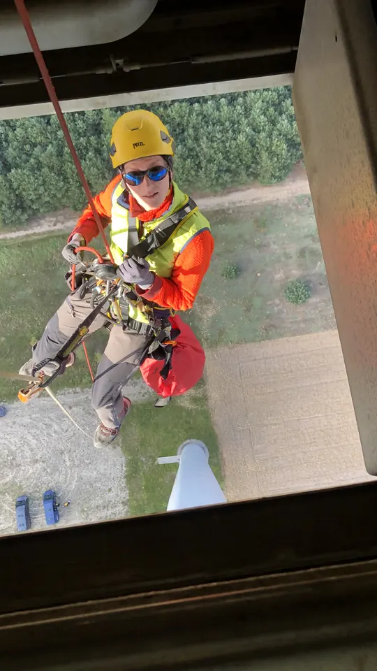
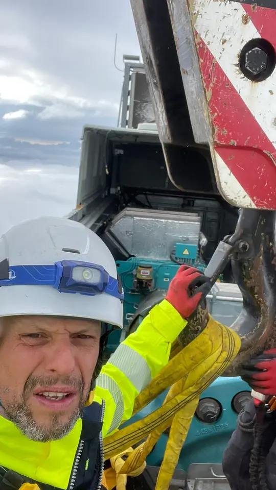
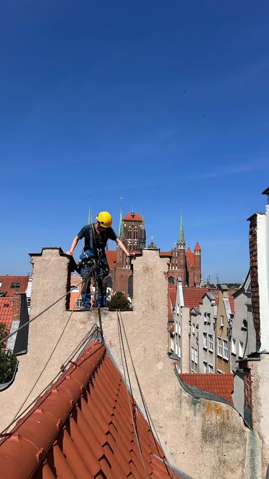

Mycie i czyszczenie
Elewacje i przeszklenia bez podnośnika i rusztowania.
- fasady szklane biurowców
- elewacje, glony i zacieki
- świetliki i dachy hal
- mycie po budowie
Rope Access Group to rodzinna firma alpinistyczna z Gdyni. Od 25 lat pracujemy na wysokości: na budynkach w Trójmieście, na farmach wiatrowych, na platformach offshore i przy konstrukcjach przemysłowych w Polsce i za granicą.


Rope Access Group to klasyczne przedsiębiorstwo typu „father and son”. Firmę prowadzą Przemysław i Michał Szapar. Przemek od ćwierć wieku pracuje w alpinizmie przemysłowym, Michał wnosi świeże spojrzenie i nowe technologie. Przy każdym zleceniu jesteśmy osobiście, więc rozmawiasz z ludźmi, którzy wykonują pracę i za nią odpowiadają.
Jako instruktorzy GWO szkolimy kadry dla branży wiatrowej i telekomunikacyjnej. Stale podnosimy kwalifikacje, szkolimy własny zespół i inwestujemy w sprzęt. Bezpieczeństwo jest u nas standardem, a nie hasłem.



Pracowaliśmy na platformach wiertniczych Oil & Gas, przy montażu i naprawach turbin wiatrowych na Bałtyku i za granicą, przy konstrukcjach stalowych, na dworcach PKP, w obiektach portowych, przy infrastrukturze wojskowej i zabytkach. Te same standardy bezpieczeństwa stosujemy przy każdym dachu i każdej elewacji na Pomorzu.
Każdą pracę, która wymaga dostępu do elewacji, dachu lub konstrukcji. Szybciej i taniej niż z rusztowania czy podnośnika.
Elewacje i przeszklenia bez podnośnika i rusztowania.
Naprawy, uszczelnienia i zabezpieczenia na wysokości.
Praca tam, gdzie nie dojedzie podnośnik.
Wiedza z najbardziej wymagających branż.
Nasza baza jest w Gdyni. Na co dzień pracujemy w Trójmieście i okolicach, a stałą obsługę obiektów i większe zlecenia realizujemy w całym regionie.
Nasza codzienna praca: biurowce, wspólnoty, kamienice, hale i obiekty portowe.
Gdynia · Sopot · Gdańsk
Stała obsługa obiektów i zlecenia dla firm oraz zarządców nieruchomości.
Rumia · Reda · Wejherowo · Lębork · Słupsk
Prace na obiektach przemysłowych, w halach i na budynkach mieszkalnych.
Pruszcz Gdański · Tczew · Kościerzyna · Malbork
Poza Pomorzem: projekty offshore i przemysłowe realizujemy w całej Polsce i za granicą.
Najlepiej pracuje nam się z firmami, które chcą mieć jednego, sprawdzonego wykonawcę na lata. Zarządcy nieruchomości, deweloperzy, generalni wykonawcy i firmy przemysłowe mogą liczyć u nas na stałe warunki i pierwszeństwo terminów.